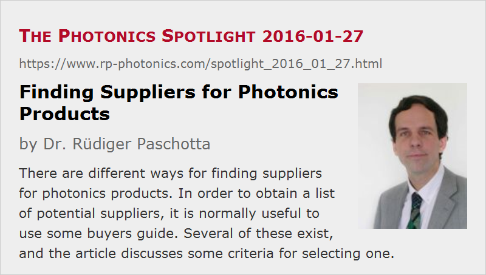

Finding Suppliers for Photonics Products
Posted on 2016-01-27 as a part of the Photonics Spotlight (available as e-mail newsletter!)
Permanent link: https://www.rp-photonics.com/spotlight_2016_01_27.html
Author: Dr. Rüdiger Paschotta, RP Photonics Consulting GmbH
Abstract: There are different ways for finding suppliers for photonics products. In order to obtain a list of potential suppliers, it is normally useful to use some buyers guide. Several of these exist, and the article discusses some criteria for selecting one.

Although the Photonics Spotlight normally treats aspects of laser physics and technology, in some occasions I discuss non-technical matters. This time I tell you some thoughts on the question how engineers and scientists can find suppliers for photonics products – for example, optical components used in lasers or in laser applications.
There are different ways for finding suppliers:
- If you have purchased some items already, or if you got hints from a colleague, you may just have a look at the websites of a few companies which, as you know already, offer the kind of items you are searching for. Of course, the risk with that approach is that you may then overlook better suited suppliers which you have not encountered yet.
- There is a lot of advertising, for example in the usual trade journals and on various websites, which make you aware of certain suppliers. This may trigger you to check their websites, if you happen to read some ad in the moment where you are interested in a certain type of product, but again you may overlook others.
For any serious purchase decision, you actually first want to have a set of different suppliers for a certain product and only then decide which one you select; depending on the situation, you may apply very different selection criteria like the known reputation of the company, how convincing their product descriptions are, the geographical location, etc. The question is then:
How to get a list of suppliers for a certain product?
Essentially, there are two different ways for obtaining such a list:
- You may make it yourself. Nowadays, people would often use web searches for that purpose. If you enter a search term like “femtosecond lasers” into Google, for example, you will easily find a substantial number of suppliers for that.
- You may use a list which has been compiled by others. For many years, there have been various buyer's guides – originally, in printed form (often published once per year), and nowadays normally also or only in the Internet. In such an online resource, you would either enter a search term for a product or click through some category scheme to find a list of suppliers for a particular product. Using a printed guide is no longer popular, mostly because it is less convenient and cannot always be up to date.
I think that it absolutely makes sense to use a buyer's guide; at least if you found a good one, it is much easier for you to get a good overview on available suppliers. At least in the initial search phase, you have to deal with only a single website layout, and you do not have to filter a lot of search hits to find out what really refers to suppliers (with some exceptions, see below).
Nevertheless, people will often start with a web search simply because it is the easiest start for those who are too lazy to use browser bookmarks and the like. However, they may then quickly find a buyer's guide in the top search results and continue with that.
How to decide for some buyer's guide?
There are some well established photonics buyer's guides from various publishers and societies; some prominent examples:
- the Photonics.com Buyer's Guide from Laurin Publishing, the publisher of Photonics Spectra, BioPhotonics and other journals
- optics.org, operated by SPIE
- the LaserFocusWorld buyer's guide from PennWell
- the RP Photonics Buyer's Guide, published by ourselves (RP Photonics) since 2012
Obviously, I cannot be neutral in my judgment which buyer's guide is the best one. However, you can think yourself whether you find the following criteria appropriate, and what conclusions result from applying them:
- Use what you already know to be good: it is most natural to use a buyer's guide on a website with which you are already familiar and which you know is of high quality, because you are already using it often for other purposes. The RP Photonics website contains the famous Encyclopedia of Laser Physics and Technology, which is used every day by a huge number of industry experts and researchers worldwide, because it is a trustworthy high-quality source for an enormous amount of scientific and technical information. When reading an encyclopedia article which is related to a certain product, it takes a single click from there to get to the corresponding list of suppliers.
- Use what you find most easily: Nowadays, many users are actually too lazy to use bookmarks in their browser and just do a web search every time they need something. They are than most likely lead to a buyer's guide of a website like our one which has a very high search engine ranking. (Actually, people often first get to some encyclopedia article and move over to the buyer's guide from there.)
- You may prefer a buyer's guide which tells you as many suppliers as possible. As an example, if you search suppliers for dye lasers, optics.org gives you over 500 matches, while our RP Photonics Buyer's Guide lists only 15. However, your excitement about finding more than 500 suppliers would not last long, because you would soon realize that the vast majority of the companies listed by optics.org do actually not offer dye lasers, whereas all 15 listed by us do. It appears that for being listed in some buyer's guides as a supplier for dye lasers it is sufficient that the keyword is found in some full text search – for example, because somewhere it was written that the diode lasers of that supplier can be used instead of dye lasers. You then realize that the quality of the supplied data is essential for the usefulness of such a guide. We do our best to eliminate any product listings which are not justified by corresponding offers on the supplier's website. You can imagine that some people find it clever to claim that they are a supplier for many more things than they actually offer, and that they will get through with that in a buyer's guide where the data are processed by people without a decent technical expertise. In our case, they fail, because I check such data myself before they get into our database.
- Another aspect is the handling of a website: is the page layout clear and consistent, is it convenient for finding what you search for (or is it cluttered with ads which detract you all the time), does the web server react quickly, etc. We do our best to deliver the highest quality also in all these respects.
The Business Side
Anyone operating such buyer's guide will have to invest a serious amount of work and will thus try to earn some money with it. The only reasonable way to do that appears to be advertising: one tries to motivate suppliers to pay something for improved entries, increasing their chances to sell something. This is somewhat problematic, of course (as it is with all advertising); a supplier paying something for improved listings may not necessarily be the supplier which is best for the users. How severe that problem is depends on the priorities of the operator of the buyer's guide. Some appear to be doing anything for money while minimizing their own efforts, for example by accepting any paid product entries without ever checking that the supplier really offers such goods. Others (like us) use a long-term perspective and give the priority to the users rather than to the immediate turnover. Hopefully, the majority of users will eventually find out where they are served best and use that resource.
Suppliers should of course also find out which buyer's guide is the best place for spending their advertising money. An important criterion must be what the users go for. Unfortunately, it is hard to obtain reliable traffic data on other websites; even in cases where you get certified traffic data, it is often not clear to which exactly the data apply and how much of that is relevant for the buyer's guide part of the website. (We regularly publish quite detailed and clear statistical data and appeared to be quite exceptional in that respect.)
There are actually some companies which are exploiting suppliers in a quite ruthless manner. I don't want to explicitly mention their names in order to avoid trouble, but you may guess which companies I mean. They are doing aggressive telephone marketing in order to sell advertising banners which are close to useless, because they appear on websites which do not have any substantial traffic. I experienced it myself that on the telephone they tell you numbers which look fairly good, and if you check your server statistics later on (which many don't do, unfortunately), you discover that the obtained referral] traffic is extremely poor, not justifying the expense at all. It is then usually too late, however, to get thousands of wasted dollars back. Unfortunately, even the websites of some quite prestigious societies are abused for such kind of ruthless business practices. It is very unfortunate that many companies lose a lot of money that way – often without noticing, and if they notice, then they may develop an extremely skeptical attitude against any form of online advertising, which then also hurts serious and trustworthy companies like ours.
I wished that everyone using online advertising would regularly check their server statistics in order to see where the referral traffic is really coming from and which advertising is worth its money. It appears, however, that many are not doing their job and therefore continue to spend money on useless things (see above), just sticking to offers with well known names.
Service is another important aspect. For example, we make it easy for suppliers to update their product information, which is also in the interest of users. Our thorough check of product listings also helps users as much as the suppliers. In case of enhanced product entries containing product descriptions, we regularly check whether links to the supplier's website are still working, since it happens that the supplier changes his website structure and forgets to tell us.
You see, there is a lot of work to be done in order to have such a resource kept at a high quality standard. To do that work is not exactly a quick way to become rich. However, for us it makes sense as part of a very comprehensive approach. More and more users and advertisers recognize the very high quality of our offers, and presumably this contributes a lot to the very nice business development of RP Photonics.
This article is a posting of the Photonics Spotlight, authored by Dr. Rüdiger Paschotta. You may link to this page and cite it, because its location is permanent. See also the RP Photonics Encyclopedia.
Note that you can also receive the articles in the form of a newsletter or with an RSS feed.
Questions and Comments from Users
Here you can submit questions and comments. As far as they get accepted by the author, they will appear above this paragraph together with the author’s answer. The author will decide on acceptance based on certain criteria. Essentially, the issue must be of sufficiently broad interest.
Please do not enter personal data here; we would otherwise delete it soon. (See also our privacy declaration.) If you wish to receive personal feedback or consultancy from the author, please contact him e.g. via e-mail.
By submitting the information, you give your consent to the potential publication of your inputs on our website according to our rules. (If you later retract your consent, we will delete those inputs.) As your inputs are first reviewed by the author, they may be published with some delay.
|  |
If you like this page, please share the link with your friends and colleagues, e.g. via social media:
These sharing buttons are implemented in a privacy-friendly way!